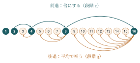

STEP II 1993、第8問
先に進む前に問題を読んでおこう。問題は STEP Support Programme の問題データベースにある： step.maths.org/questions/93-s2-q8
導入
相加平均と相乗平均の不等式（arithmetic mean–geometric mean inequality、AM–GM）は、おそらく数学で最も役に立つ不等式である。この不等式によれば、正の数に対しては、通常の平均はつねに「積による平均」以上であり、等号はすべての数が等しいときに限って成り立つ。微積分（calculus）を使わずに最適化（optimisation）問題を解くことができ、ほかの不等式の証明にも使われ、解析学のあらゆる分野に現れる。
この問題では、1821年にコーシー（Augustin-Louis Cauchy）が与えた、奇妙で美しい帰納法（induction）によってこの不等式を証明する。\(n\) から \(n + 1\) へ進むのではなく、\(2\) から \(4\)、\(8\)、\(16\) へと跳び、\(2\) の累乗だけを押さえたうえで、逆向きに下りてあいだの数を埋めるのである。「帰納法」は教科書で習う形よりもずっと柔軟な考え方であることを思い出させてくれる。
取りかかる前に
オンラインのアーカイブにあるこの試験問題には誤植があり、「\(b_1 = a_2\)」となっている。もちろん正しくは \(b_1 = a_1\) である。\(b\) たちは \(a\) たちに、それらの平均の複製を付け加えて数を増やしたものだ、というのが意図である。
\(n\) 個から \(n + 1\) 個へ進むよりも、\(2^m\) 個から \(2^{m+1}\) 個へ進むほうが易しいのはなぜだろうか。
\(2^{m+1}\) 個の数は自然に \(2^m\) 個ずつの2つの組に分かれるので、それぞれの半分に帰納法の仮定を適用し、2つの数の場合を使って両者を合わせればよいからである。\(n\) から \(n + 1\) へ進む場合には、これほど対称的な手がかりは得られない。
順を追って解く
段階 1 2つの数
\(\left( \frac{a_1 + a_2}{2} \right)^2 - a_1 a_2 = \frac{a_1^2 + 2a_1a_2 + a_2^2 - 4a_1a_2}{4} = \frac{(a_1 - a_2)^2}{4} \geq 0.\)■
段階 2 倍にする
\(m = 1\) の場合は段階1である。\(2^m\) 個の数に対して \((*)\) が成り立つと仮定し、\(2^{m+1}\) 個の正の数をとる。
\(2^{m+1}\) 個の数を前半と後半に分け、それぞれの相加平均を \(P\), \(Q\) とする。帰納法の仮定はそれぞれの半分について何を述べているか。
それぞれの半分に \((*)\) を適用すると、 \[a_1 \cdots a_{2^m} \leq P^{2^m} \qquad\text{かつ}\qquad a_{2^m + 1} \cdots a_{2^{m+1}} \leq Q^{2^m}.\] これらを掛け合わせると（すべて正である）、\(2^{m+1}\) 個の数すべての積は \((PQ)^{2^m}\) 以下である。ここで2つの数の場合から \(PQ \leq \left( \frac{P + Q}{2} \right)^2\) が得られ、\(\frac{P + Q}{2}\) はちょうど \(2^{m+1}\) 個の数すべての平均である。したがって \[a_1 \cdots a_{2^{m+1}} \leq (PQ)^{2^m} \leq \left( \frac{P + Q}{2} \right)^{2^{m+1}} = \left( \frac{a_1 + \cdots + a_{2^{m+1}}}{2^{m+1}} \right)^{2^{m+1}},\] となり、これは \(m + 1\) に対する \((*)\) である。帰納法により、項の個数が \(2\) の累乗であれば AM–GM が成り立つ。■
段階 3 すき間を埋める
次に任意の \(n\) をとり、\(2^m > n\) となる \(m\) を選ぶ。列 \(a_1, \ldots, a_n\) に、その平均 \(A\) の複製を \(2^m - n\) 個付け加える。
付け加えたあとの列 \(b_1, \ldots, b_{2^m}\) の平均はいくらか。
和は \((a_1 + \cdots + a_n) + (2^m - n)A = nA + (2^m - n)A = 2^m A\) なので、平均は \(A\) そのものである。平均の複製を付け加えても平均は変わらない。よって \(b\) たちに \((*)\) を適用すると \[a_1 \cdots a_n \cdot A^{2^m - n} \leq A^{2^m}.\]
証明を完成させよ。
両辺を \(A^{2^m - n}\)（これは正である）で割ると \(a_1 \cdots a_n \leq A^n\) となる。\(n\) 乗根をとって、 \[(a_1 \cdots a_n)^{1/n} \leq A = \frac{a_1 + \cdots + a_n}{n}. \qed\]
振り返り
別の道筋に沿った帰納法。段階2は \(m\) についての帰納法であり、\(n = 2, 4, 8, \ldots\) を押さえる。段階3は、任意の \(2\) の累乗から、それより小さい任意の \(n\) へ下りる方法である（図 3.2.1）。
平均で補う。平均を変えずに列を延ばすという技法は覚えておく価値がある。任意の \(n\) についての問題を、都合のよい \(n\) についての問題に変える方法なのである。
等号はいつ成り立つか。証明をさかのぼると、等号が成り立つには2つの数の場合を使ったすべての箇所で等号が成り立つ必要があり、それはすべての数が等しいときに限られる。

背後にある数学
コーシーはこの証明を著書 Cours d’analyse（『解析教程』、1821年）で発表した。この本は、第2章で論じた解析学の厳密な扱いの出発点となったものである。この手法は現在前進・後退帰納法（forward–backward induction）と呼ばれている。無限個の場合からなる列（ここでは \(2\) の累乗）について命題を証明し、次に \(n\) の場合から \(n - 1\) の場合が導かれることを示す。この2つを合わせれば、すべての \(n\) に到達する。本節の段階3では \(2^m\) から \(n\) へ一気に下りたが、1段ずつ下りることもできる。\(n - 1\) 個の数にその平均の複製を1個付け加えれば、\(n\) の場合から \(n - 1\) の場合が導かれることがわかる。
1つの不等式の多くの証明
AM–GM には何十通りもの証明があり、それらを比べることは数学のさまざまな流儀を知るよい方法である。
凸性による証明。対数関数は凹関数（concave function）なので、対数の平均は平均の対数以下である。指数をとればこれが AM–GM であり、第 3.3 節 の主題でもある。
ポリア（George Pólya）の証明。\(e^{x - 1} \geq x\) を使う（\(x = 1\) における \(e^{x-1}\) の接線は曲線の下側にある）。\(A\) を平均として、これを各 \(a_i/A\) に適用して掛け合わせると、\(\prod \frac{a_i}{A} \leq e^{\sum (a_i/A - 1)} = e^0 = 1\) となる。ポリアは、この証明を夢の中で思いついたと語っている。
均す方法による証明。2つの数が等しくなければ、その両方をそれらの平均で置き換える。相加平均は変わらず、2つの数の場合から積は増える。これを繰り返すと、すべての数が平均へと近づいていく。
微積分を使わない最適化
AM–GM を使うと、多くの最適化問題が1行で解ける。表面積が与えられた箱のうち、体積が最大となるのはどれか。周の長さが与えられた長方形のうち、面積が最大となるのはどれか。（正方形である。2つの数の場合から \(xy \leq \bigl(\frac{x+y}{2}\bigr)^2\) であり、等号は \(x = y\) のときに成り立つ。）等号成立条件は最適値がどこにあるかを教えてくれ、不等式はそれが単なる停留点（stationary point）ではなく本当に最適値であることを教えてくれる。第 3.1 節 での注意と比べてみよ。
思考のスキル
帰納法は \(1, 2, 3, \ldots\) と進む必要はない。すべての場合に到達する道筋であれば、どんな道筋に沿って帰納法を行ってもよい。倍にしていく方法、累積帰納法（strong induction）、あるいは部分列に沿って前進してから後退してすき間を埋める方法などである。
\(n\) から \(n+1\) への素直な一歩が難しいときは、どんな一歩なら易しいか、そしてその一歩ですべての場合に到達できるかを考えよ。
次の一歩
1段下りる。\(n\) 個の数に対して AM–GM が成り立つならば、\(n - 1\) 個の数に対しても成り立つことを、平均の複製を1個付け加えることで直接示せ。
増加数列。\(n + 1\) 個の数 \(1 + \frac1n, \ldots, 1 + \frac1n, 1\)（\(1 + \frac1n\) が \(n\) 個）に AM–GM を適用して、\(\left(1 + \frac1n\right)^n < \left(1 + \frac{1}{n+1}\right)^{n+1}\) を示せ。
最良の箱。ふたのある直方体の箱の表面積が \(S\) である。互いに異なる3つの面の面積に AM–GM を用いて、体積が \((S/6)^{3/2}\) 以下であり、等号は立方体のときに成り立つことを示せ。
調和平均。数 \(1/a_i\) に AM–GM を適用して、調和平均（harmonic mean）\(\dfrac{n}{1/a_1 + \cdots + 1/a_n}\) が相乗平均以下であることを示せ。
さらに学ぶために
J. Michael Steele, The Cauchy–Schwarz Master Class（Cambridge University Press）。不等式について問題を軸に展開するすばらしい本で、ちょうどこの水準から始まる。第2章は AM–GM を扱っている。
Hardy, Littlewood & Pólya, Inequalities（Cambridge University Press）。20世紀の偉大な解析学者3人による古典的な参考書である。
Arthur Engel, Problem-Solving Strategies（Springer）。第7章はオリンピックの不等式の問題を大量に集めたものである。